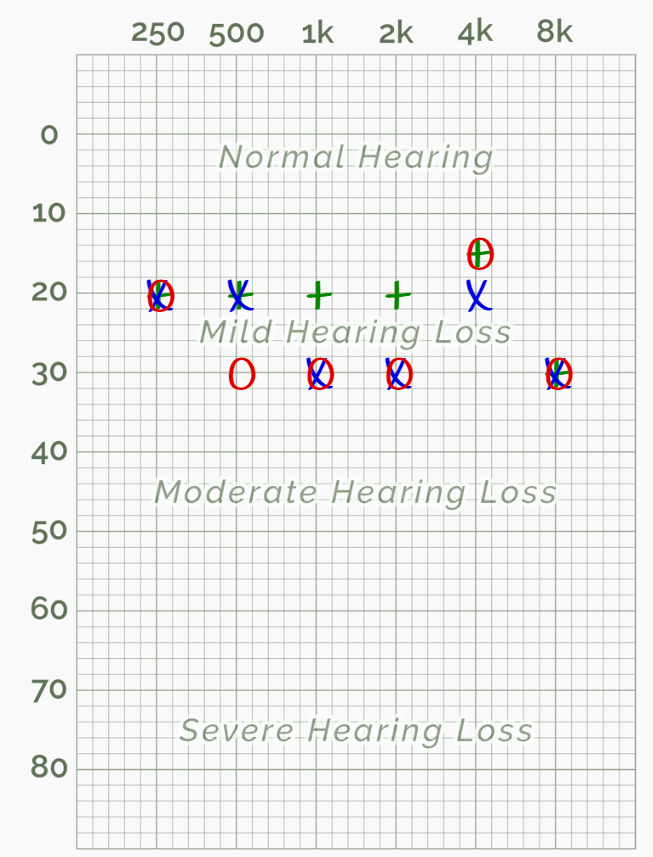
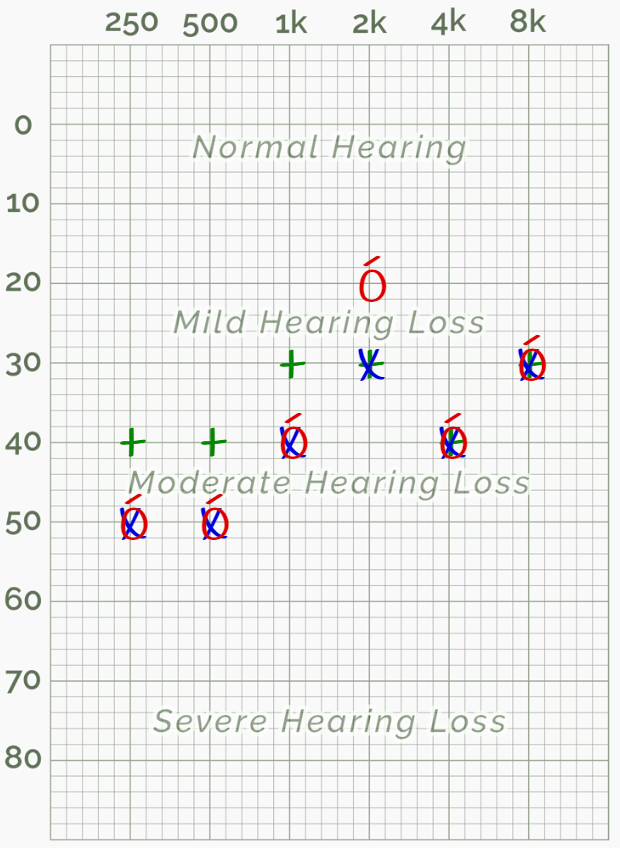
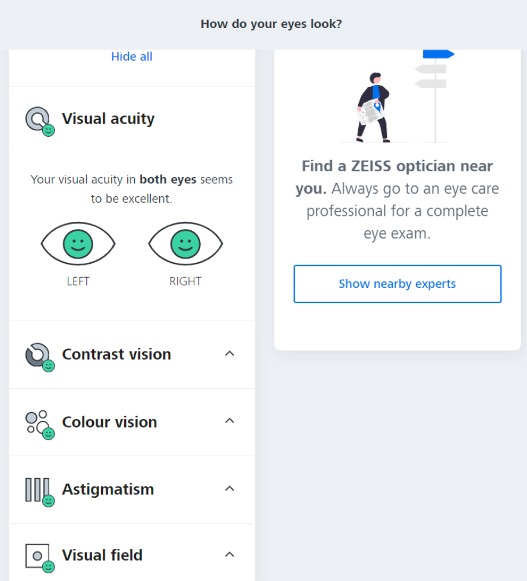

Relatório de Testes
Utilizando os fones envolventes, cada integrante do grupo deve realizou suas audições individualmente. Como temos uma sensibilidade diferente para cada faixa de frequência, fizemosr vários testes de sensibilidade, para percorrer qual o nível de audição que nosso Sistema Auditivo capta, dependendo da frequência do sinal.
A) Teste com Fone de Ouvido
Com a utilziação de um fone de ouvidos obteve-se o seguinte resultado:
Analisando o grafico , pode se observar que o resultado do meu teste deu como audição normal e com perda leve em algumas faixas de frquencia .os simbolos vermelho [o] representa a audição do ouvido o Azul [x] o esquedo e o verde [+] ambos os lados. na faixa dos 500 hz 1khz 2k e 8k meu ouvido tem mais dificuldade de capturar o som
B) Teste com Fone de Ouvido não envolvente
Com a utilziação do auto falante do notebook obteve-se o seguinte resultado:
Analisando o grafico , pode se observar que o resultado do meu teste deu como perda leve e em algumas faixas de frquencia como perda moderada. .os simbolos vermelho [o] representa a audição do ouvido o Azul [x] o esquedo e o verde [+] ambos os lados. na faixa dos 250 hz 500 meu ouvido tem mais dificuldade de capturar o som.
Conculsão do teste auditivo:
Tecnicamente o teste auditivo possui variações pois, estamos diante de duas situações: ou o teste auditivo que está sendo realizado pode não ter sido bem calibrado ou houve algum erro no teste auditvo. Entretanto, podem ser obtidas informações úteis neste site, embora de natureza diferente. A condição calibrada pressupõe que você esteja usando bons fones de ouvido ou alto-falantes - a resposta deles deve ser plana em toda a faixa de frequência testada (250-8000 Hz) - e você conseguiu calibrar corretamente os níveis de som. Nesse caso, a precisão deste teste auditivo é estimada em cerca de 10 dBNA, o que é bom o suficiente para diagnosticar uma perda auditiva leve, moderada ou grave: simplesmente observe os gráficos de limiar no audiograma e dê-lhes uma tolerância de 10 dBNA. . A condição não calibrada pode ser entendida através do pior cenário: os fones de ouvido ou alto-falantes têm desempenho ruim e os teste podem não ser confiaveis.
A) Teste Visual
Analisando o resultado do teste, conclui-se que eu estou com a visão boa pois, obtive bons resultados nas 4 cateogiras.
- Visão de contraste: A visão de contraste refere-se à capacidade de distinguir diferentes níveis de contraste entre objetos e o fundo. Uma boa visão de contraste é importante para tarefas como leitura, dirigir à noite e identificar objetos em ambientes com pouca luz.
- Visão de cores: A visão de cores refere-se à capacidade de perceber e distinguir diferentes cores. A maioria das pessoas tem uma visão de cores normal e pode ver uma ampla variedade de cores. No entanto, algumas pessoas podem ter algum tipo de deficiência na visão de cores, como o daltonismo, que afeta a capacidade de distinguir certas cores.
- Astigmatismo: O astigmatismo é um problema visual comum em que a forma da córnea ou do cristalino do olho é irregular, resultando em visão distorcida. Pessoas com astigmatismo podem ter dificuldade em ver objetos tanto de perto quanto de longe, e podem experimentar visão embaçada ou distorcida.
- Campo visual: O campo visual refere-se à área que podemos ver quando olhamos em frente. É a área que nossos olhos abrangem quando olhamos diretamente para alguma coisa sem mover os olhos. Um campo visual normalmente inclui a visão periférica e a visão central.
Essas categorias são avaliadas durante um exame oftalmológico para determinar a saúde e a qualidade da visão de uma pessoa. É importante realizar exames regulares dos olhos para monitorar e tratar qualquer problema visual que possa surgir. Se você tiver alguma preocupação com a sua visão, é melhor consultar um profissional de saúde ocular qualificado.
...